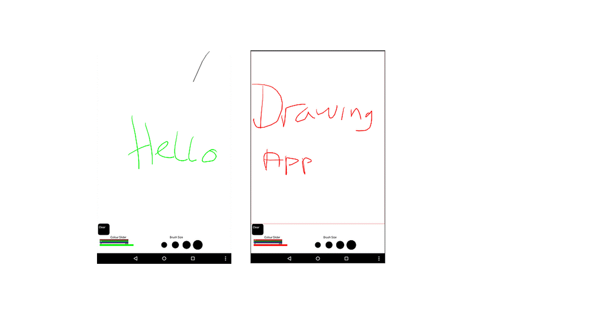

For this project we was put into a group of 4 to create an app for a andirod device,
we was asked to make certin features in the app such as a clear button,
different colours and to select different brush sizes.We started with
a paper prototype with how we wanted the app to look, we did some user
testing for this which gave us an idea of what worked and what we had to
do. We then started to develop the app in processing making different
changes to the design to make it work when using processing, the start
of the app every interaction on the app was a button with set colours
and we had one standard brush size. however as we had time left over i
changed to colours to a slider using an inported libary and making different
brush sizes and give the brush a relalistic look to it.